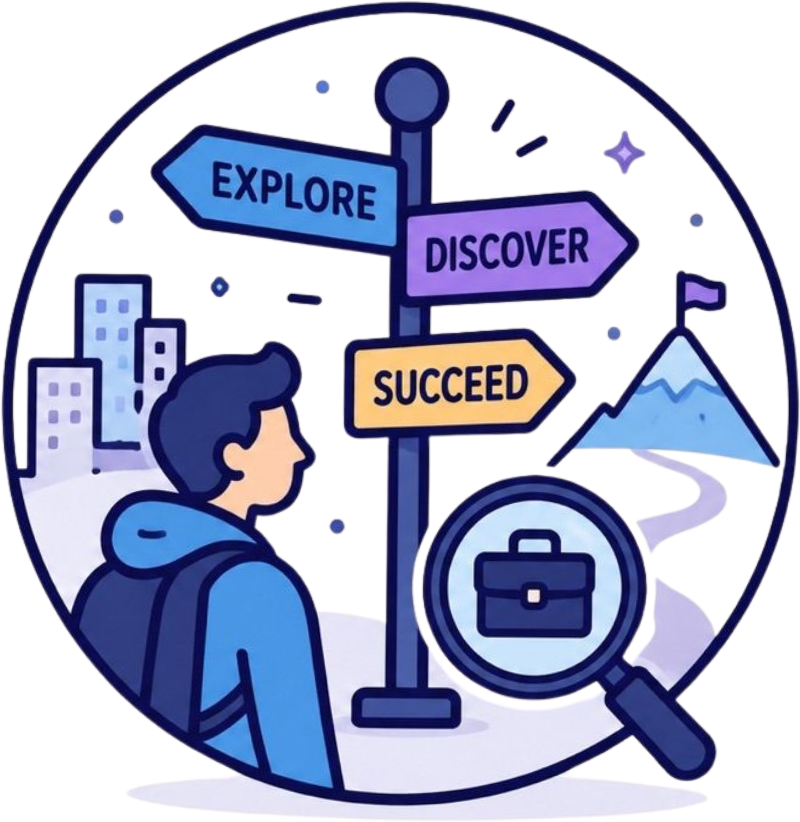

Career Buddy is an interactive career guidance website designed especially for teenagers and school students to explore future careers in a fun, simple, and engaging way.

Who We Are?
Career Buddy is a digital platform created to help students discover careers based on their interests, personality, and skills. Many teenagers feel confused about choosing the right c[...]
This project was developed by Norhazianah Binti Hassan as a Final Year Project (FYP) focusing on career awareness and guidance for teens.
Our Mission
Help students explore career opportunities
Provide simple and understandable career information
Encourage students to discover their strengths and interests
Make career guidance more interactive and enjoyable
What We Offer?
🎯 Interactive Career Quiz
Students can answer personality and interest-based questions to discover careers that match them.
📚 Career Information
Learn about different careers including:
Media & Communication
Healthcare
Engineering
Education
Defence & Safety Forces
Business & Finance
Creative Arts
Tourism & Hospitality
Sports & Athletics
Technology & IT
Aviation
Oil & Gas
and many more
🗺️ Academic Pathways
Students can understand pathways after:
SPM
STPM
Diploma
Foundation
Degree
💡 Inspiration & Motivation
Success stories, tips, and guidance to motivate students in planning their future careers.
Why Career Buddy?
Easy to understand
Student-friendly design
Interactive and engaging
Fun career discovery experience
Helps students make informed decisions
Vision
To become a trusted digital career guide platform that helps teenagers confidently plan their future careers.